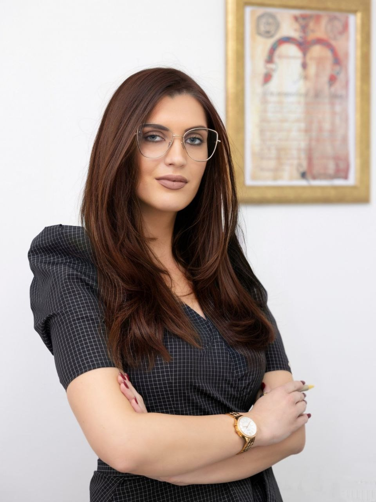
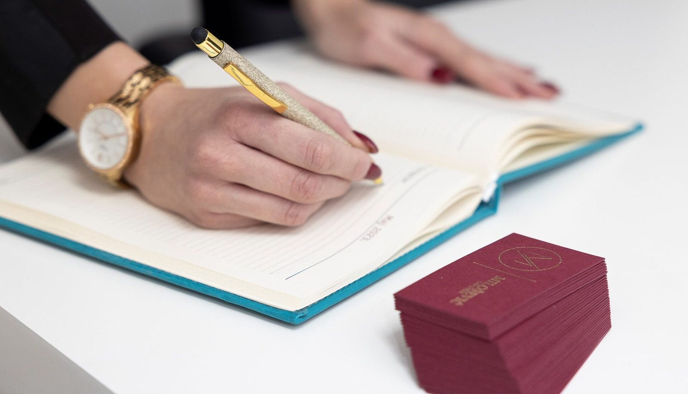

Da mihi facta, dabo tibi ius.
Daj mi činjenice,daću ti pravo.
Advokatska kancelarija Milošević, u samom centru Beograda. Pravna pomoć fizičkim licima i privrednim subjektima u krivičnom, građanskom, radnom i privrednom pravu.
- 9oblasti prava, od krivičnog do poreskog
- 4odlike na pravosudnom ispitu
- 1:1jednak pristup svakom klijentu i predmetu
Advokatska kancelarija Milošević nalazi se u samom centru Beograda. Pružamo pravnu pomoć privrednim subjektima u poslovanju u Srbiji, ali i fizičkim licima u problemima sa kojima se svakodnevno suočavaju.
Jednak pristup
Isti nivo profesionalne odgovornosti za svakog klijenta i svaki predmet.
Blagovremeno obaveštavanje
Znate za svaku bitnu promenu u predmetu, na vreme.
Poverljivost i odmerenost
Stručnost i profesionalnost usmerena na čuvanje ugleda advokature.
Nove tehnologije
Poseban akcenat stavljamo na digitalizaciju i savremen način rada.
Devet oblasti ekspertize.
Zastupamo i savetujemo pred sudovima, organima i osiguravajućim društvima. Otvorite oblast da vidite šta tačno radimo.
01 Krivično pravo
DetaljnijeZatvori
- Pravna pomoć u postupcima za prestupe i krivična dela iz Krivičnog zakonika
- Postupci po Zakonu o privrednim prestupima
- Postupci po Zakonu o maloletnim učiniocima krivičnih dela i krivičnopravnoj zaštiti maloletnih lica
- Odbrana okrivljenih i zastupanje oštećenih
02 Prekršajno pravo
DetaljnijeZatvori
- Zastupanje u prekršajnom postupku
- Prekršajni nalog i zahtev za pokretanje prekršajnog postupka
- Prekršaji iz Zakona o bezbednosti saobraćaja na putevima
- Zakon o oružju i municiji i Zakon o javnom redu i miru
03 Obligaciono pravo
DetaljnijeZatvori
- Šteta na vozilu, telesne povrede, smrt ili težak invaliditet bliskog lica
- Zastupanje pred svim osiguravajućim društvima
- Naknada štete usled ujeda psa
- Šteta nastala na radu
04 Radno pravo
DetaljnijeZatvori
- Sastavljanje svih opštih akata i pravilnika
- Nezakonit otkaz i sporovi povodom štrajka
- Neisplaćen regres, topli obrok, porodiljsko i odsustvo radi nege deteta
- Mobing i bezbednost na radu
- Sporovi po Zakonu o radu i Zakonu o državnim službenicima
05 Privredno pravo
DetaljnijeZatvori
- Registracija osnivanja, promena i brisanja pred Agencijom za privredne registre
- Stečajni postupci
- Prinudna naplata potraživanja od privrednih subjekata i pravnih lica
06 Stvarno pravo
DetaljnijeZatvori
- Sačinjavanje ugovora o prometu nepokretnosti
- Postupci pred Službom za katastar nepokretnosti
- Hipotekarni postupci
- Svojinski i državinski sporovi
07 Porodično pravo
DetaljnijeZatvori
- Sporazum o razvodu braka, bračni ugovor, ugovor o izdržavanju
- Razvod braka tužbom ili predlogom za sporazumni razvod
- Postupci radi izdržavanja i u vezi nasilja u porodici
- Samostalno ili zajedničko vršenje roditeljskog prava i lišenje roditeljskog prava
08 Nasledno pravo
DetaljnijeZatvori
- Sprovođenje ostavinskih postupaka
- Razvrgnuće nasledničke zajednice
- Zaveštanje i ugovor o doživotnom izdržavanju
- Ugovor o raspodeli imovine za života
09 Poresko pravo
DetaljnijeZatvori
- Postupci po Zakonu o poreskom postupku i poreskoj administraciji
- Povraćaj PDV-a za kupca prvog stana
- Oslobođenje od poreza na prenos apsolutnih prava za kupce prvog stana
- Porezi na imovinu i porez na dohodak građana
- Poreski konsalting
Sedam zlatnih pitanja.
Od ovih pitanja se polazi u rasvetljavanju zločina. Pristup je zadržan do danas, jer se odgovorom na njih dolazi do istine. Tako i mi počinjemo svaki predmet.
Anina specijalnost je krivično i građansko pravo.
Iznesite nam činjenicePređite mišem ili dodirnite karticu za prevod.

Advokat Ana Milošević
Rođena je u Čačku. Osnovnu školu „Kirilo Savić“ završila je kao nosilac Vukove diplome, a gimnaziju u Ivanjici. Prvo interesovanje za pravo stekla je od oca, diplomiranog pravnika.
Njena specijalnost je prvenstveno krivično i građansko pravo. Tokom rada stekla je veštine u vođenju pregovora i zastupanju pred sudovima. Sa svojim timom pruža pravnu pomoć fizičkim i pravnim licima.
- 2013Upis na Pravni fakultet Univerziteta u Beogradu
- 2017Diploma, kao stipendista fakulteta
- 2 god.Pripravnička vežba u advokatskoj kancelariji u Beogradu
- 2020Pravosudni ispit sa četiri odlike
- DanasAdvokatski ispit i sopstvena kancelarija
„Za Anu je advokatura životni poziv, kojem je posvećena od prvog dana.“
Odlike na pravosudnom ispitu: građansko pravo, privredno pravo, ustavno pravo i međunarodno privatno pravo.
Visok nivo profesionalnosti.
Kod nas ćete naići na stručnost, poverljivost, profesionalnost i odmerenost. Odnos gradimo na uzajamnom poštovanju, razumevanju i poverenju, a prema klijentima smo korektni, iskreni i brižni.
- Kompetencija01
- Poštovanje02
- Usavršavanje03
- Pozitivnost04
- Fokus05
- Podrška06
Od prvog poziva do rešenja.
- 1
Javite se
Pozovite 061 4275 900, radnim danima od 8 do 18 časova, i zakažite konsultacije u kancelariji na Terazijama.
- 2
Iznesite činjenice
Ko, šta, gde, kada i kako. Na osnovu činjenica procenjujemo Vaš pravni položaj.
- 3
Zastupanje
Pred sudovima, organima i osiguravajućim društvima, uz isti nivo odgovornosti za svaki predmet.
- 4
Uvek u toku
Blagovremeno Vas obaveštavamo o svim bitnim promenama u predmetu.

Ignorantia legis nocet.
Nepoznavanje zakona šteti. Pitajte na vreme.
Pre potpisa, pre roka, pre ročišta. Jedan poziv može da Vam uštedi mnogo problema.